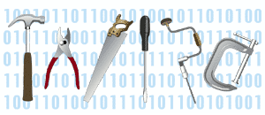

<div class="center"> <h1>Software Carpentry:<br>Lessons Learned</h1> <p><img src="../../files/talks/codebender-logo.svg" alt="Third Bit logo" width="20%" /></p> <h2>Greg Wilson</h2> <p>2023-05-01</p> <p><img src="../../files/talks/cc-by.svg" width="20%" alt="CC-BY" /></p> </div> --- ## A Word of Caution - Years ago, I lost my temper while arguing with my brother, and said, "Jeff, I could teach you everything I know and you'd still be an idiot." - Please keep that in mind as you listen to what follows --- ## In the Beginning - 1991: I wish scientists wrote better software - 1998: I wish someone would teach scientists how to program - 2011: I wish someone would teach them how to teach well - 2017: I wish people knew how to organize because I think we're in trouble here… --- ## The Long and Winding Road <div class="center"> <img src="../../files/talks/carpentries-logo.svg" alt="Carpentries logo" width="100%"> <p>"We teach foundational coding and data science skills to researchers worldwide."</p> </div> --- ## The Long and Winding Road <div class="row"> <div class="col-6 center"> 1998 </div> <div class="col-6 center"> 2010 </div> </div> <div class="row"> <div class="col-6 center"> </div> <div class="col-6 center"> <img src="../../files/talks/swc-2010.png" alt="2010" width="200px"> </div> </div> <div class="row"> <div class="col-6 center"> 2004 </div> <div class="col-6 center"> 2014 </div> </div> <div class="row"> <div class="col-6 center">  </div> <div class="col-6 center"> <img src="../../files/talks/dc-2014.png" alt="2014" width="200px"> </div> </div> <div class="row"> <div class="col-6 center"> 2007 </div> <div class="col-6 center"> 2017 </div> </div> <div class="row"> <div class="col-6 center"> </div> <div class="col-6 center"> <img src="../../files/talks/lc-2017.png" alt="2017" width="150px"> </div> </div> --- ## Growth <div align="center"> <table> <tr><th>Year</th><th>Workshops</th><th>Learners</th></tr> <tr><td align="right">2012</td><td align="right"> 38</td><td align="right">1378</td></tr> <tr><td align="right">2013</td><td align="right"> 93</td><td align="right">3212</td></tr> <tr><td align="right">2014</td><td align="right">139</td><td align="right">4742</td></tr> <tr><td align="right">2015</td><td align="right">274</td><td align="right">7755</td></tr> <tr><td align="right">2016</td><td align="right">345</td><td align="right">7133</td></tr> <tr><td align="right">2017</td><td align="right">338</td><td align="right">7248</td></tr> <tr><td align="right">2018</td><td align="right">436</td><td align="right">6329</td></tr> </table> </div> --- ## Where We've Been <img src="./workshops.png" alt="Map showing where workshops have been run" width="100%" class="center"> --- ## Along the Way <div class="center"> <img src="../../files/talks/making-software.jpg" width="20%"> <img src="../../files/talks/aosa1.png" width="20%"> </div> --- ## Lesson #1 - **Most scientists think of programming as a tax they have to pay to do science** - Those who don't are *not* representative of the other 90% <p class="center">See <a href="https://www.hanselman.com/blog/DarkMatterDevelopersTheUnseen99.aspx">Scott Hanselman: Dark Matter Developers</a></p> --- ## Lesson #2 - **The curriculum is full** - And even if it wasn't: <img src="../../files/talks/blind-leading-blind.png" alt="Cartoon of the blind leading the blind" class="center"> --- ## Lesson #3 - **The future (of teaching) is already here** - It's just not evenly distributed <div class="center"> </div> --- ## Examples - <a href="http://tinyurl.com/guzdial-subgoals">Labelled subgoals improve performance</a> - <a href="http://tinyurl.com/guzdial-peer-instruction">Peer instruction beats lecture</a> - <a href="http://dl.acm.org/authorize.cfm?key=6833065">Media-first instruction increases retention</a> - <a href="http://dl.acm.org/citation.cfm?id=2960312">Grades in computing classes are <em>not</em> bimodal</a> <a href="http://teachtogether.tech"><img src="../../files/bib/t3.jpg" width="25%" class="center"></a> --- ## Lesson #4 - **Most people would rather fail than change** - I.e., they would rather ignore evidence than change their working practices or business plan <img src="./global-warming-myth.jpg" alt="Magazine cover claiming global warming is a myth" class="center"> --- ## Lesson #5 - **Programmers can rationalize _anything_** - Git is as horrible as it is useful - Stop blaming users for its shortcomings --- ## Lesson #5 - **Programmers can rationalize _anything_** <img src="../../files/talks/spreadsheet.png" alt="Screenshot of a spreadsheet" class="center"> - This is a good tool - Please stop sneering at scientists for using it --- ## Lesson #6 - **Correctness isn't compelling** - Because the odds of being caught are vanishingly small - But people care a *lot* about productivity <div class="row"> <div class="col-2"></div> <div class="col-4"><strong>Bait…</strong></div> <div class="col-4"><strong>…and Switch</strong></div> <div class="col-2"></div> </div> <div class="row"> <div class="col-2"></div> <div class="col-4"> Unix shell<br> Git / GitHub<br> Python or R<br> SQL<br> Make </div> <div class="col-4"> automating tasks<br> tracking and sharing<br> modularization<br> structured data<br> reproducibility </div> <div class="col-2"></div> </div> --- ## Lesson #7 - **You're not alone.** - Single-author curriculum = unmet needs - Single source of funding = single point of failure - So recruit the willing… - …train them… - …reward them… - …and cede power to them --- ## Lesson #7 <div align="center"> <table> <caption>AP Student Numbers</caption> <tr><th>Subject</th><th align="right">2012</th><th align="right">2017</th></tr> <tr><td>Calculus</td><td align="right">361,000</td><td align="right">316,000</td></tr> <tr><td>Statistics</td><td align="right">153,000</td><td align="right">215,000</td></tr> <tr><td>Computer Science</td><td align="right">26,100</td><td align="right">44,000</td></tr> </table> </div> --- ## Lesson #7 <div align="center"> <img src="./nabt.png" width="100%"> </div> - I think we're finally ready --- ## What Really Matters <div class="row"> <div class="col-4"> <img src="../../files/talks/bpco.jpg" width="80%"> </div> <div class="col-8"> <p>There's no point being able to crunch data if there are questions you're not allowed to ask…</p> <p class="fragment">…in being able to reproduce results if nobody's listening…</p> <p class="fragment">…or in science being open if some people aren't welcome</p> </div> </div> --- ## Thank You <div class="center"> <p><img src="../../files/talks/gvwilson.png" width="40%"></p> <p><a href="http://third-bit.com">Greg Wilson</a></p> <p><a href="mailto:gvwilson@third-bit.com">gvwilson@third-bit.com</a></p> <p><a href="http://third-bit.com/talks/lessons-learned/">http://third-bit.com/talks/lessons-learned/</a></p> </div>